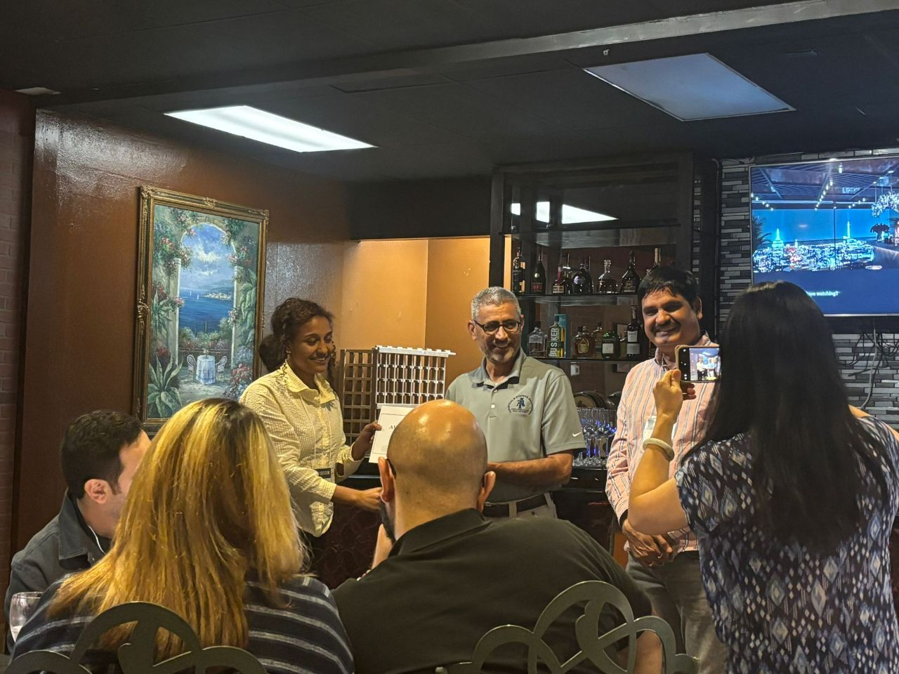

lemlemabebawasayegetahun [at] gmail [dot] com
Lemlem Abebaw Asaye is a civil engineer specializing in enhancing critical infrastructure resilience through advanced data analytics and artificial intelligence. Currently a Ph.D. candidate at North Dakota State University, she has developed innovative frameworks and AI models to optimize infrastructure performance and efficiency. With dual master's degrees in Structural Engineering and Construction Technology & Management, Lemlem has substantial professional experience managing project schedules, bids, and stakeholder communication. Her work is published in respected academic journals and conferences, earning recognition through numerous awards and fellowships.
Representative papers are highlighted.
Lemlem Asaye, Chau Le, Ying Huang, Trung Q. Le, Om Prakash Yadav, and Tuyen Le
Lemlem Asaye, Chau Le, Trung Q. Le, Om Prakash Yadav, and Tuyen Le
Lemlem Asaye, Wajahat Sammer Ansari, Esayas Gebreyouhannes, Zahoor Hussain, Ahsan Naseem
Muhammad Ali Moriyani, Lemlem Asaye, Chau Le, Tuyen Le, Trung Le
Springer, 2025
[Paper]Lemlem Asaye, Muhammad Ali Moriyani, Chau Le, Tuyen Le
ASCE Journal of Management in Engineering, 2023
[Paper]Muhammad Ali Moriyani, Lemlem Asaye, Chau Le, Tuyen Le
ASCE Journal of Management in Engineering, 2023
[Paper]Lemlem Asaye, Muhammad Ali Moriyani, Chau Le, Trung Q. Le, Om Prakash Yadav
ASCE Computing in Civil Engineering, 2024
[Paper]Lemlem Abebaw, P.M. Shanmuga Vadivu
Journal of Engineering and Applied Sciences, 2020
[Paper]Lemlem Asaye, Chau Le, Trung Q. Le, Om Prakash Yadav, Tuyen Le
ASCE Computing in Civil Engineering, 2025
[Paper]Lemlem Asaye, Chau Le, Ying Huang, Trung Q. Le, Om Prakash Yadav, Tuyen Le
ASCE Journal of Pipeline Systems Engineering, 2025
[Paper]Muhammad Ali Moriyani, Lemlem Asaye, Trung Le, Harun Pirim, Om Parkash Yadav, Tuyen Le
Resilient Cities and Structures, 2025
[Paper]Unity University, Addis Ababa, Ethiopia (Lecturer) September 2018 - December 2021
North Dakota State University, Fargo, ND (as a Teaching Assistant) January 2022- Present
Artificial Intelligence on Sustainable Energy Infrastructure Network
National Science Foundation Funded Program
Volunteer Work
Journal Reviewer March 2024 — Present Serving as a reviewer for the Results in Engineering journal , ASCE International Conference on Computing in Civil Engineering.
Honors & Awards

Best Graduate Student Presentation Award (1st place) – AI SUSTEIN Annual Meeting, Oct. 2024.
Problems to Possibilities Fellowship, Team Leader, North Dakota State University, Oct. 2024.
Robert W. and Phyllis Anderson Construction Management and Civil Engineering Graduate Scholarship – North Dakota State University, Sep. 2024.
Mancur Olson Graduate Fellowship 2024-25 – Challey Institute for Global Innovation and Growth, Aug. 2024.
Pluralism Lab– Challey Institute for Global Innovation and Growth, April. 2024.
Problems to Possibilities Fellowship, Team Leader, North Dakota State University, Oct. 2023.
Robert W. and Phyllis Anderson Construction Management and Civil Engineering Graduate Scholarship – North Dakota State University, Sep. 2023.
Best Graduate Student Presentation Award – AI SUSTEIN Annual Meeting, Aug. 2023.
Mancur Olson Graduate Fellowship 2023-24 – Challey Institute for Global Innovation and Growth, Aug. 2023.
Very Grate Distinction Graduate – Addis Ababa Science and Technology University, Jan. 2021.
ERA Scholarship – Addis Ababa Science and Technology University Admission for MSc Construction Technology and Management, Sep. 2018.
Female Full Scholarship – Addis Ababa University Admission for MSc in Structural Engineering, Sep. 2017.